<title>Amara First Contact</title>
<meta name="claude:viewport-fit-sides" content="cover">
<meta name="description" content="Offline triage and referral for mothers and children in rural Tanzania. A small AI on the first responder's phone, sourced rules, and an SMS that gets her to the right clinic.">
<meta property="og:title" content="Amara First Contact">
<meta property="og:description" content="The first door she knocks on gets her to the right care. Offline triage and referral for mothers and children, piloting in Hai, Kilimanjaro.">
<meta property="og:image" content="https://ericastephens.github.io/amara-first-contact/story/img/og.png">
<meta name="twitter:card" content="summary_large_image">
<meta name="theme-color" content="#F6F3EC">
<link rel="preconnect" href="https://fonts.googleapis.com">
<link rel="preconnect" href="https://fonts.gstatic.com" crossorigin>
<link rel="stylesheet" href="https://fonts.googleapis.com/css2?family=Public+Sans:wght@400;500;600;700&family=Source+Serif+4:opsz,wght@8..60,400;8..60,600;8..60,700&family=JetBrains+Mono:wght@500&display=swap">
<style>
/* Layout: a long story scroll in chapters, alternating paper and deep-green bands; phone screenshots carry the demo. */
:root{
  --paper:#F6F3EC; --paper-2:#EDE7DA; --card:#FFFDF8; --line:#E2DCCF;
  --ink:#34413C; --ink-soft:#5E6B66; --green:#0F4A3E; --amber:#9A5B00;
  --night:#0F2E28; --night-ink:#F3EEE3; --night-soft:#BFD8D5; --gold:#E8A33D;
  --go:#B3261E; --go-bg:#FBE9E7; --today:#9A5B00; --today-bg:#FBF0DC; --ok:#1F6B4F;
  --phone:#1B2420;
  --serif:'Source Serif 4', Georgia, 'Times New Roman', serif;
  --sans:'Public Sans', system-ui, -apple-system, 'Segoe UI', Roboto, sans-serif;
  --mono:'JetBrains Mono', ui-monospace, 'SFMono-Regular', Menlo, monospace;
}
@media (prefers-color-scheme: dark){:root:not([data-theme="light"]){
  --paper:#121A17; --paper-2:#18221E; --card:#1D2925; --line:#2E3C37;
  --ink:#D9E2DE; --ink-soft:#9DADA7; --green:#8FD3BE; --amber:#E8A33D;
  --night:#0A1F1A; --night-ink:#F3EEE3; --night-soft:#BFD8D5; --gold:#E8A33D;
  --go:#FF8A80; --go-bg:#3A1714; --today:#E8A33D; --today-bg:#33260F; --ok:#7FD1AE;
  --phone:#060A09; color-scheme:dark}}
:root[data-theme="dark"]{
  --paper:#121A17; --paper-2:#18221E; --card:#1D2925; --line:#2E3C37;
  --ink:#D9E2DE; --ink-soft:#9DADA7; --green:#8FD3BE; --amber:#E8A33D;
  --night:#0A1F1A; --night-ink:#F3EEE3; --night-soft:#BFD8D5; --gold:#E8A33D;
  --go:#FF8A80; --go-bg:#3A1714; --today:#E8A33D; --today-bg:#33260F; --ok:#7FD1AE;
  --phone:#060A09; color-scheme:dark}

*{box-sizing:border-box}
html{scroll-behavior:smooth}
@media (prefers-reduced-motion:reduce){html{scroll-behavior:auto}}
body{margin:0;background:var(--paper);color:var(--ink);font:17px/1.6 var(--sans);-webkit-text-size-adjust:100%}
body::before{content:"";position:fixed;inset:0 0 auto;height:env(safe-area-inset-top,0px);z-index:20;background:var(--paper)}
img,video{max-width:100%;display:block}
a{color:var(--green);text-underline-offset:3px}
a:focus-visible,button:focus-visible,video:focus-visible{outline:3px solid var(--gold);outline-offset:3px;border-radius:6px}
h1,h2,h3{font-family:var(--serif);color:var(--green);text-wrap:balance;margin:0;font-weight:600}
p{margin:0}
.wrap{max-width:1120px;margin:0 auto;padding-left:max(16px,env(safe-area-inset-left,0px));padding-right:max(16px,env(safe-area-inset-right,0px))}
.band{padding-block:clamp(56px,9vw,112px)}
.band.alt{background:var(--paper-2)}
.band.night{background:var(--night);color:var(--night-ink)}
.band.night h2,.band.night h3{color:var(--night-ink)}
.eyebrow{font:600 13px/1.3 var(--sans);letter-spacing:.14em;text-transform:uppercase;color:var(--amber)}
.night .eyebrow{color:var(--gold)}
.chap{display:flex;gap:14px;align-items:baseline}
.chap b{font:500 13px var(--mono);color:var(--ink-soft);letter-spacing:0}
.night .chap b{color:var(--night-soft)}
h2{font-size:clamp(32px,5vw,52px);line-height:1.1;letter-spacing:-.01em}
h3{font-size:22px;line-height:1.25}
.lede{font-size:clamp(18px,2vw,21px);line-height:1.55;max-width:62ch}
.head{display:flex;flex-direction:column;gap:14px;margin-bottom:clamp(32px,5vw,56px)}
.soft{color:var(--ink-soft)}
.night .soft{color:var(--night-soft)}
.src{font-size:13px;line-height:1.5;color:var(--ink-soft);max-width:90ch;margin-top:28px}
.night .src{color:var(--night-soft)}
.sample{display:inline-block;font:600 11px/1 var(--sans);letter-spacing:.06em;text-transform:uppercase;padding:4px 7px;border-radius:5px;background:var(--today-bg);color:var(--today);vertical-align:middle}

/* nav */
.nav{position:sticky;top:env(safe-area-inset-top,0px);z-index:10;background:color-mix(in srgb,var(--paper) 92%,transparent);backdrop-filter:blur(8px);border-bottom:1px solid var(--line)}
.nav .wrap{display:flex;align-items:center;gap:20px;min-height:60px}
.logo{display:flex;align-items:center;gap:10px;font:700 17px var(--sans);color:var(--green);text-decoration:none;margin-right:auto}
.logo svg{flex:none}
.nav nav{display:flex;gap:22px}
.nav nav a{color:var(--ink);text-decoration:none;font-size:15px;font-weight:500}
.nav nav a:hover{color:var(--green)}
.btn{display:inline-flex;align-items:center;justify-content:center;gap:8px;min-height:46px;padding:10px 20px;border-radius:12px;font:600 16px var(--sans);text-decoration:none;border:1.5px solid var(--green);white-space:nowrap}
.btn.solid{background:var(--green);color:var(--paper)}
.btn.ghost{color:var(--green);background:transparent}
.nav .btn{min-height:40px;padding:8px 14px;font-size:15px}
@media (max-width:760px){.nav nav{display:none}}

/* hero */
.hero{padding-block:clamp(40px,7vw,88px) clamp(56px,8vw,96px)}
.hero .wrap{display:grid;grid-template-columns:minmax(0,1.15fr) minmax(0,.85fr);gap:clamp(32px,6vw,72px);align-items:center}
.hero h1{font-size:clamp(40px,6.4vw,72px);line-height:1.04;letter-spacing:-.02em;margin-block:18px 22px}
.hero h1 em{font-style:italic;color:var(--amber)}
.hero .ctas{display:flex;gap:12px;flex-wrap:wrap;margin-top:30px}
.hero .meta{display:flex;flex-wrap:wrap;gap:8px 18px;margin-top:26px;font-size:14px;color:var(--ink-soft)}
.hero .meta span{display:flex;gap:7px;align-items:center}
.hero .meta span::before{content:"";width:6px;height:6px;border-radius:50%;background:var(--amber)}
.stage{position:relative;justify-self:center;width:min(100%,330px);padding-bottom:70px}
.phone{background:var(--phone);padding:9px;border-radius:34px;box-shadow:0 30px 60px -30px rgba(15,46,40,.45)}
.phone img{border-radius:26px;width:100%;height:auto;aspect-ratio:780/1688;object-fit:cover}
.sms{position:absolute;left:-14%;bottom:0;width:min(290px,92%);background:var(--card);border:1px solid var(--line);border-radius:18px 18px 18px 4px;padding:14px 16px;box-shadow:0 18px 40px -20px rgba(15,46,40,.5)}
.sms .from{font:500 11px var(--mono);color:var(--ink-soft);display:flex;justify-content:space-between;margin-bottom:6px}
.sms p{font-size:15px;line-height:1.45;color:var(--ink)}
.sms p b{font-family:var(--mono);font-weight:500;background:var(--today-bg);color:var(--today);padding:0 4px;border-radius:4px}
.sms .tr{font-size:12.5px;color:var(--ink-soft);margin-top:8px;border-top:1px dashed var(--line);padding-top:8px}
@media (max-width:820px){.hero .wrap{grid-template-columns:minmax(0,1fr)}.sms{left:-6%}}

/* stats */
.stats{display:grid;grid-template-columns:repeat(4,minmax(0,1fr));gap:1px;background:var(--line);border:1px solid var(--line);border-radius:16px;overflow:hidden}
.stat{background:var(--card);padding:24px 22px;display:flex;flex-direction:column;gap:8px;min-width:0}
.stat .n{font:600 clamp(34px,4vw,46px)/1 var(--serif);color:var(--green);font-variant-numeric:tabular-nums}
.stat .n small{font-size:.5em;color:var(--ink-soft);font-weight:400}
.stat p{font-size:15px;line-height:1.45}
@media (max-width:900px){.stats{grid-template-columns:repeat(2,minmax(0,1fr))}}
@media (max-width:440px){.stats{grid-template-columns:minmax(0,1fr)}}

/* noor */
.noor{display:grid;grid-template-columns:minmax(0,1fr) minmax(0,1fr);gap:clamp(28px,5vw,64px);align-items:start;margin-bottom:56px}
.noor blockquote{margin:0;font:400 clamp(21px,2.4vw,26px)/1.45 var(--serif);color:var(--ink);border-left:3px solid var(--amber);padding-left:22px}
.noor ul{margin:0;padding:0;list-style:none;display:flex;flex-direction:column;gap:10px}
.noor li{display:grid;grid-template-columns:120px minmax(0,1fr);gap:12px;font-size:16px;padding-bottom:10px;border-bottom:1px solid var(--line)}
.noor li span{color:var(--ink-soft);font-size:14px}
@media (max-width:760px){.noor{grid-template-columns:minmax(0,1fr)}}

/* missed table */
.tbl{overflow-x:auto;border:1px solid var(--line);border-radius:14px;background:var(--card)}
table{border-collapse:collapse;width:100%;min-width:620px;font-size:15.5px}
th,td{text-align:left;padding:14px 18px;vertical-align:top;border-bottom:1px solid var(--line)}
tr:last-child td{border-bottom:0}
th{font:600 12px var(--sans);letter-spacing:.1em;text-transform:uppercase;color:var(--ink-soft);background:var(--paper-2)}
td.big{font:600 22px/1.2 var(--serif);color:var(--green);white-space:nowrap;font-variant-numeric:tabular-nums}

/* aims */
.aims{display:grid;grid-template-columns:repeat(3,minmax(0,1fr));gap:20px}
.aim{border-top:2px solid var(--gold);padding-top:16px;display:flex;flex-direction:column;gap:6px}
.aim h3{font-size:21px}
.aim .ans{font:500 12px var(--mono);color:var(--gold);letter-spacing:.02em}
@media (max-width:820px){.aims{grid-template-columns:repeat(2,minmax(0,1fr))}}
@media (max-width:480px){.aims{grid-template-columns:minmax(0,1fr)}}

/* journey */
.journey{display:grid;grid-auto-flow:column;grid-auto-columns:minmax(220px,250px);gap:22px;overflow-x:auto;scroll-snap-type:x mandatory;padding:4px 4px 22px;scrollbar-color:var(--line) transparent}
.step{scroll-snap-align:start;display:flex;flex-direction:column;gap:12px;margin:0}
.step .phone{padding:7px;border-radius:28px;box-shadow:none}
.step .phone img{border-radius:22px}
.step figcaption{display:flex;flex-direction:column;gap:4px}
.step .k{font:500 12px var(--mono);color:var(--amber)}
.step h3{font-size:19px}
.step p{font-size:14.5px;line-height:1.5;color:var(--ink-soft)}
.hint{font-size:13px;color:var(--ink-soft);margin-top:4px}

/* ai */
.ai{display:grid;grid-template-columns:minmax(0,1.1fr) minmax(0,.9fr);gap:clamp(28px,5vw,64px);align-items:start}
.reads{display:flex;flex-direction:column;gap:14px}
.read{background:color-mix(in srgb,var(--night-ink) 6%,transparent);border:1px solid color-mix(in srgb,var(--night-ink) 14%,transparent);border-radius:14px;padding:16px 18px;display:flex;flex-direction:column;gap:10px}
.read q{font:italic 400 19px/1.4 var(--serif);color:var(--night-ink);quotes:"\201C" "\201D"}
.read .en{font-size:13.5px;color:var(--night-soft)}
.read .row{display:flex;justify-content:space-between;gap:12px;font-size:15px;font-weight:600}
.read .row span:last-child{font:500 14px var(--mono);font-variant-numeric:tabular-nums}
.meter{height:6px;border-radius:3px;background:color-mix(in srgb,var(--night-ink) 14%,transparent);position:relative;overflow:hidden}
.meter i{position:absolute;inset:0 auto 0 0;background:var(--gold);border-radius:3px}
.meter::after{content:"";position:absolute;left:40%;top:-3px;bottom:-3px;width:2px;background:var(--night-ink);opacity:.6}
.read.unsure .row{color:#FFB4A9}
.read.unsure .meter i{background:#FFB4A9}
.specs{display:flex;flex-direction:column;gap:0;border-top:1px solid color-mix(in srgb,var(--night-ink) 18%,transparent)}
.specs div{display:grid;grid-template-columns:130px minmax(0,1fr);gap:14px;padding:13px 0;border-bottom:1px solid color-mix(in srgb,var(--night-ink) 18%,transparent);font-size:15.5px}
.specs dt,.specs b{font:600 22px/1.2 var(--serif);color:var(--gold)}
.specs span{color:var(--night-soft)}
@media (max-width:860px){.ai{grid-template-columns:minmax(0,1fr)}}

/* triage tiers */
.tiers{display:grid;grid-template-columns:repeat(3,minmax(0,1fr));gap:18px}
.tier{background:var(--card);border:1px solid var(--line);border-radius:16px;padding:22px;display:flex;flex-direction:column;gap:10px}
.pill{align-self:flex-start;font:700 12px var(--sans);letter-spacing:.08em;text-transform:uppercase;padding:5px 10px;border-radius:999px}
.pill.go{background:var(--go-bg);color:var(--go)}
.pill.today{background:var(--today-bg);color:var(--today)}
.pill.ok{background:color-mix(in srgb,var(--ok) 14%,transparent);color:var(--ok)}
.tier p{font-size:15.5px}
.who{display:grid;grid-template-columns:repeat(3,minmax(0,1fr));gap:18px;margin-top:40px}
.who div{display:flex;flex-direction:column;gap:6px;padding:20px 0;border-top:1px solid var(--line)}
.who h3{font-size:20px}
.who p{font-size:15.5px}
code.icd{font:500 13px var(--mono);background:var(--paper-2);padding:2px 6px;border-radius:5px;color:var(--ink)}
@media (max-width:820px){.tiers,.who{grid-template-columns:minmax(0,1fr)}}

/* exposures */
.exp{display:grid;grid-template-columns:repeat(2,minmax(0,1fr));gap:0 40px}
.exp div{display:grid;grid-template-columns:150px minmax(0,1fr);gap:16px;padding:16px 0;border-bottom:1px solid var(--line)}
.exp b{font:600 18px/1.3 var(--serif);color:var(--green)}
.exp p{font-size:15.5px}
.exp p span{display:block;color:var(--ink-soft);font-size:14px;margin-top:2px}
@media (max-width:820px){.exp{grid-template-columns:minmax(0,1fr)}.exp div{grid-template-columns:120px minmax(0,1fr)}}

/* rules */
.rules{display:grid;grid-template-columns:repeat(3,minmax(0,1fr));gap:28px 32px;counter-reset:r}
.rule{display:flex;flex-direction:column;gap:6px;counter-increment:r}
.rule h3{font-size:20px;display:flex;gap:10px;align-items:baseline}
.rule h3::before{content:counter(r);font:500 13px var(--mono);color:var(--gold)}
.rule p{font-size:15.5px;color:var(--night-soft)}
@media (max-width:820px){.rules{grid-template-columns:repeat(2,minmax(0,1fr))}}
@media (max-width:520px){.rules{grid-template-columns:minmax(0,1fr)}}

/* outbreak */
.split{display:grid;grid-template-columns:minmax(0,1fr) auto;gap:clamp(28px,5vw,64px);align-items:center}
.pair{display:flex;gap:18px}
.pair .phone{width:200px;padding:7px;border-radius:28px;box-shadow:none}
.pair .phone img{border-radius:22px}
ol.flow{margin:0;padding:0;list-style:none;display:flex;flex-direction:column;gap:0;counter-reset:f}
ol.flow li{counter-increment:f;display:grid;grid-template-columns:36px minmax(0,1fr);gap:12px;padding:14px 0;border-bottom:1px solid var(--line);font-size:16px}
ol.flow li::before{content:counter(f);font:500 13px/1.9 var(--mono);color:var(--amber)}
@media (max-width:860px){.split{grid-template-columns:minmax(0,1fr)}.pair{justify-content:center}.pair .phone{width:min(46%,200px)}}

/* field problems */
.probs{display:grid;grid-template-columns:repeat(2,minmax(0,1fr));gap:20px}
.prob{background:var(--card);border:1px solid var(--line);border-radius:16px;padding:24px;display:flex;flex-direction:column;gap:8px}
.prob h3{font-size:22px}
.prob p{font-size:15.5px}
@media (max-width:760px){.probs{grid-template-columns:minmax(0,1fr)}}

/* built on */
.prior{display:grid;grid-template-columns:repeat(4,minmax(0,1fr));gap:20px}
.prior div{display:flex;flex-direction:column;gap:8px;padding-top:16px;border-top:2px solid var(--green)}
.prior h3{font-size:20px}
.prior .where{font:500 12px var(--mono);color:var(--ink-soft)}
.prior p{font-size:15px}
.prior .take{color:var(--amber);font-weight:600;font-size:14.5px}
@media (max-width:900px){.prior{grid-template-columns:repeat(2,minmax(0,1fr))}}
@media (max-width:480px){.prior{grid-template-columns:minmax(0,1fr)}}

/* pilot */
.pilot{display:grid;grid-template-columns:minmax(0,1fr) minmax(0,1fr);gap:clamp(28px,5vw,56px)}
.pilot ul{margin:0;padding-left:20px;display:flex;flex-direction:column;gap:8px;font-size:16px}
.pilot h3{margin-bottom:14px}
@media (max-width:760px){.pilot{grid-template-columns:minmax(0,1fr)}}

/* videos */
.feature{margin:0 0 32px;display:flex;flex-direction:column;gap:14px}
.feature video{width:100%;aspect-ratio:16/9;background:#000;border-radius:16px}
.feature h3{font-size:22px}
.feature p{font-size:15.5px;color:var(--night-soft);max-width:75ch}
.vids{display:grid;grid-template-columns:repeat(2,minmax(0,1fr));gap:24px}
.vids figure{margin:0;display:flex;flex-direction:column;gap:12px}
.vids video{width:100%;aspect-ratio:16/9;background:#000;border-radius:14px}
.vids h3{font-size:20px}
.vids p{font-size:15px;color:var(--night-soft)}
@media (max-width:760px){.vids{grid-template-columns:minmax(0,1fr)}}

/* team */
.team{display:grid;grid-template-columns:repeat(2,minmax(0,1fr));gap:24px;margin-bottom:40px}
.person{display:flex;gap:18px;align-items:flex-start;background:var(--card);border:1px solid var(--line);border-radius:16px;padding:24px}
.av{flex:none;width:64px;height:64px;border-radius:50%;display:grid;place-items:center;background:var(--green);color:var(--paper);font:600 22px var(--serif)}
.person h3{font-size:22px}
.person p{font-size:15.5px;margin-top:6px}
@media (max-width:760px){.team{grid-template-columns:minmax(0,1fr)}}
.cta{display:flex;flex-wrap:wrap;gap:14px;align-items:center;justify-content:space-between;padding:28px;border-radius:18px;background:var(--paper-2);border:1px solid var(--line)}
.cta h3{font-size:26px}
.cta .btns{display:flex;flex-wrap:wrap;gap:12px}
footer{padding-block:36px;border-top:1px solid var(--line);font-size:13.5px;color:var(--ink-soft)}
footer .wrap{display:flex;flex-direction:column;gap:12px}
footer ol{margin:0;padding-left:18px;display:flex;flex-direction:column;gap:4px}
</style>

<header class="nav">
  <div class="wrap">
    <a class="logo" href="#top" aria-label="Amara First Contact, back to top">
      <svg width="26" height="26" viewBox="0 0 32 32" aria-hidden="true"><circle cx="16" cy="16" r="15" fill="none" stroke="currentColor" stroke-width="2"/><path d="M16 7v18M9 13c3 0 7 1.5 7 5M23 13c-3 0-7 1.5-7 5" fill="none" stroke="currentColor" stroke-width="2" stroke-linecap="round"/></svg>
      Amara First Contact
    </a>
    <nav aria-label="Sections">
      <a href="#problem">Problem</a>
      <a href="#how">How it works</a>
      <a href="#ai">Small AI</a>
      <a href="#safety">Safety</a>
      <a href="#team">Team</a>
    </nav>
    <a class="btn solid" href="https://ericastephens.github.io/amara-first-contact/?welcome" target="_blank" rel="noopener">Try the app</a>
  </div>
</header>

<main id="top">

<section class="hero">
  <div class="wrap">
    <div>
      <p class="eyebrow">World Bank × Hack-Nation · Small AI for Development 2026 · Health track</p>
      <h1>The first door she knocks on gets her to the <em>right care.</em></h1>
      <p class="lede">Amara First Contact is an offline triage and referral app for mothers and their children. A drug shop dispenser, community health worker or nurse runs it on a low-cost Android phone. A small AI reads the mother's own Swahili words, sourced rules decide how urgent it is, and she leaves with a clinic, a time and a code by SMS.</p>
      <div class="ctas">
        <a class="btn solid" href="https://ericastephens.github.io/amara-first-contact/?welcome" target="_blank" rel="noopener">Try the live demo</a>
        <a class="btn ghost" href="#watch">Watch the simulation</a>
      </div>
      <div class="meta"><span>Works with no internet</span><span>AI model under 1 MB</span><span>Pilot: Hai, Kilimanjaro, Tanzania</span></div>
    </div>
    <div class="stage">
      <div class="phone">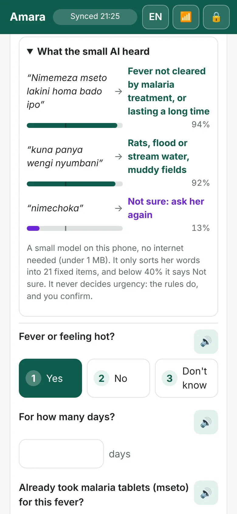</div>
      <div class="sms" role="figure" aria-label="The SMS Noor receives">
        <div class="from"><span>AMARA</span><span>08:00 · 128/160</span></div>
        <p>Habari Noor. Nenda Machame Hospital Jumanne saa 2 asubuhi. Namba yako: <b>Z96</b>. Onyesha namba hii ukifika. Ukishindwa kwenda, jibu 2.</p>
        <p class="tr">Hello Noor. Go to Machame Hospital on Tuesday at 8 am. Your code: Z96. Show it when you arrive. If you can't go, reply 2.</p>
      </div>
    </div>
  </div>
</section>

<section class="band alt" id="problem">
  <div class="wrap">
    <div class="head">
      <p class="chap"><b>01</b><span class="eyebrow">The problem</span></p>
      <h2>A crowded clinic, or a guess at the drug shop</h2>
    </div>
    <div class="noor">
      <blockquote>Care in remote areas is limited by too few clinicians and no tests on site. Patients travel far, health workers have little time per case, and low digital literacy makes both worse.<br><span class="soft" style="font:14px var(--sans)">Challenge 04 brief, Annex A (Health)</span></blockquote>
      <div>
        <p style="margin-bottom:16px">The brief gives the problem a face: <b>Noor</b>.</p>
        <ul>
          <li><span>Who</span>38, farms coffee, maize and beans on 2 hectares in the highlands</li>
          <li><span>Her phone</span>Calls, SMS and mobile money. No Wi-Fi; 3G bundles now and then</li>
          <li><span>Her languages</span>Her local language at home, Swahili when she must</li>
          <li><span>Her clinic</span>Overcrowded; doctors not always up to date; record-keeping leaves little time for her</li>
        </ul>
      </div>
    </div>
    <div class="stats">
      <div class="stat"><span class="n">4.4 <small>/ 10,000</small></span><p>Doctors, nurses and midwives per 10,000 people in Tanzania. WHO's threshold is 44.5.</p></div>
      <div class="stat"><span class="n">14%</span><p>Of health workers were absent from their facility on a survey visit.</p></div>
      <div class="stat"><span class="n">60%</span><p>Diagnostic accuracy in Tanzanian facilities on standard cases, lower in rural ones.</p></div>
      <div class="stat"><span class="n">30%</span><p>Of maternal and newborn complications were managed correctly.</p></div>
    </div>
    <p class="src">Sources: World Bank Service Delivery Indicators, Tanzania 2014 (health brief, 2016): absence 14.3%, diagnostic accuracy 60.2%, complications 30.4%. WHO Global Health Observatory, 2024 (doctors 1.75 and nurses and midwives 2.60 per 10,000).</p>
  </div>
</section>

<section class="band">
  <div class="wrap">
    <div class="head">
      <p class="chap"><b>02</b><span class="eyebrow">What gets missed</span></p>
      <h2>When every fever looks like malaria</h2>
      <p class="lede">Farming families live with animals, flood water and mosquitoes. What makes them ill depends on exposure and season, and a quick visit rarely asks.</p>
    </div>
    <div class="tbl">
      <table>
        <thead><tr><th>Number</th><th>What it means</th><th>Source</th></tr></thead>
        <tbody>
          <tr><td class="big">60.7% vs 1.6%</td><td>Severe fevers diagnosed as malaria, against those that were malaria</td><td>Crump et al., PLOS NTDs, northern Tanzania, 2007–08</td></tr>
          <tr><td class="big">26.2%</td><td>Were bacterial zoonoses caught from animals; clinicians considered none of them</td><td>Same study</td></tr>
          <tr><td class="big">90 days</td><td>Median delay before hospital for brucellosis; 44.8% missed at the first visit</td><td>BMC Public Health, rural Tanzania</td></tr>
          <tr><td class="big">59%</td><td>Of people with high blood pressure did not know they had it</td><td>PLOS Medicine, rural districts</td></tr>
          <tr><td class="big">~16%</td><td>Of maternal deaths come from high blood pressure in pregnancy</td><td>WHO pre-eclampsia fact sheet (global)</td></tr>
        </tbody>
      </table>
    </div>
  </div>
</section>

<section class="band alt">
  <div class="wrap">
    <div class="head">
      <p class="chap"><b>03</b><span class="eyebrow">Why first responders</span></p>
      <h2>The drug shop is already the front door</h2>
      <p class="lede">Mothers often see a dispenser days before a clinician. Most dispensers already send complicated cases on; they have no structure or record for it. That is where we start.</p>
    </div>
    <div class="stats">
      <div class="stat"><span class="n">31%</span><p>Went first to an accredited drug shop (ADDO) when ill, against 30% to a public facility.</p></div>
      <div class="stat"><span class="n">49%</span><p>Of medicines for a recent illness came from an ADDO.</p></div>
      <div class="stat"><span class="n">9,000+</span><p>Accredited drug shops across every mainland district, about as many as health facilities.</p></div>
      <div class="stat"><span class="n">76%</span><p>Of dispensers say they already refer complicated cases to a facility.</p></div>
    </div>
    <p class="src">What the mother has: 59% of women own a phone, 13% used the internet in the past year, and 80% can read. So the first responder holds the app and the mother gets an SMS or a voice call. Sources: Embrey et al., PLOS ONE 2016 (ADDO figures as of 2016); Tanzania DHS-MIS 2022 (women aged 15–49).</p>
  </div>
</section>

<section class="band night">
  <div class="wrap">
    <div class="head">
      <p class="chap"><b>04</b><span class="eyebrow">What Amara First Contact aims to do</span></p>
      <h2>One answer for each part of the brief</h2>
      <p class="lede soft">Tied together by continuity of care: one record that follows her from the drug shop to the clinic.</p>
    </div>
    <div class="aims">
      <div class="aim"><span class="ans">too few clinicians</span><h3>Ease overcrowding</h3><p class="soft">Arrivals are sorted and booked, so the clinic sees who is coming and why.</p></div>
      <div class="aim"><span class="ans">not up to date</span><h3>Guide clinicians</h3><p class="soft">Sourced national and WHO guidelines, with draft ICD-10 codes to confirm.</p></div>
      <div class="aim"><span class="ans">no tests on site</span><h3>Flag what to test</h3><p class="soft">Symptoms, exposures and season point to what should be ruled out.</p></div>
      <div class="aim"><span class="ans">little time, heavy records</span><h3>Better appointments</h3><p class="soft">A structured note arrives before she does.</p></div>
      <div class="aim"><span class="ans">long distances</span><h3>Right clinic, first time</h3><p class="soft">A booked slot, or Go now with a paper referral for danger signs.</p></div>
      <div class="aim"><span class="ans">low digital literacy</span><h3>Reach her simply</h3><p class="soft">SMS or a voice call in her language. No app, no internet.</p></div>
    </div>
  </div>
</section>

<section class="band" id="how">
  <div class="wrap">
    <div class="head">
      <p class="chap"><b>05</b><span class="eyebrow">How it works</span></p>
      <h2>Noor at the drug shop, in flight mode</h2>
      <p class="lede">Every screen below was recorded with the network off, using the Tanzania demo setup and 105 real clinics around Hai from OpenStreetMap.</p>
    </div>
    <div class="journey" tabindex="0" aria-label="The journey, step by step. Scroll sideways.">
      <figure class="step"><div class="phone">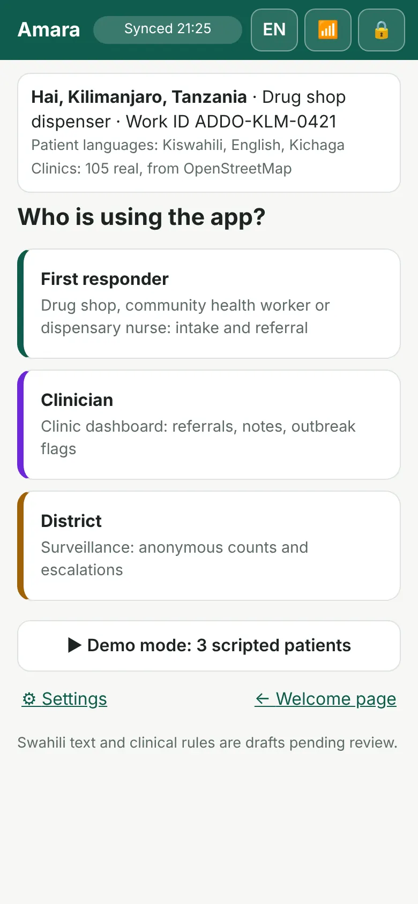</div><figcaption><span class="k">Step 1</span><h3>Set up once</h3><p>Country, district, role, work ID and languages, saved on the phone behind a PIN.</p></figcaption></figure>
      <figure class="step"><div class="phone">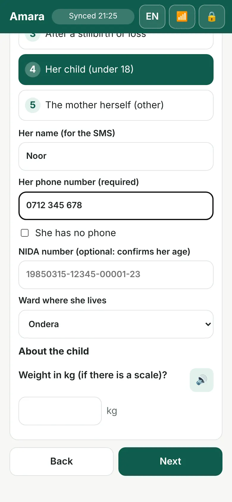</div><figcaption><span class="k">Step 2</span><h3>Register her</h3><p>A phone number is required. With no phone, her NIDA national ID lets the clinic find her and confirms her age.</p></figcaption></figure>
      <figure class="step"><div class="phone">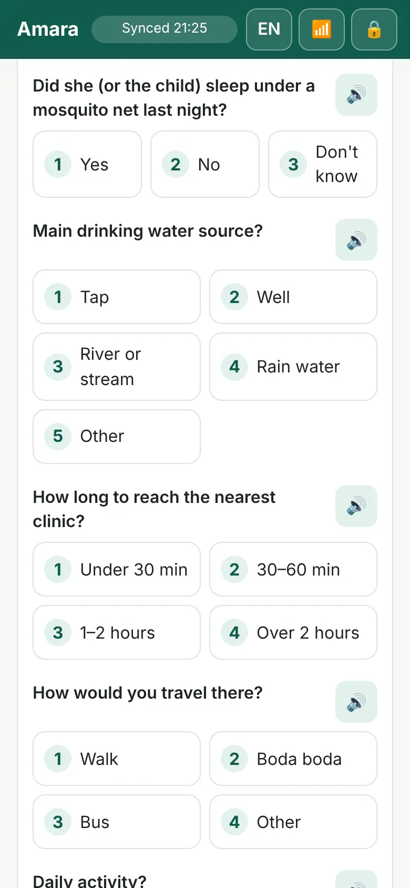</div><figcaption><span class="k">Step 3</span><h3>Simple questions</h3><p>One-tap answers: mosquito net last night, drinking water, how far the clinic is, pregnancy and family planning.</p></figcaption></figure>
      <figure class="step"><div class="phone">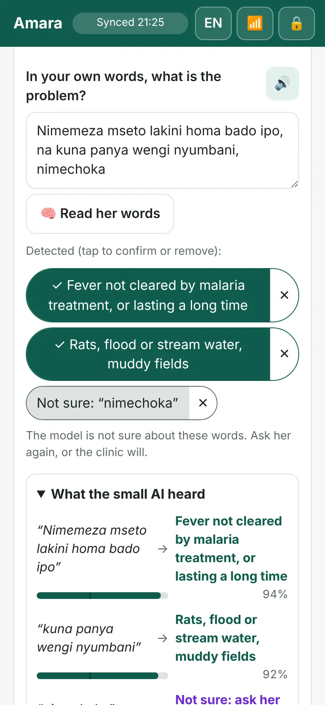</div><figcaption><span class="k">Step 4</span><h3>Her own words</h3><p>She describes the problem in Swahili. The small AI turns it into items from a fixed list, each one to confirm or remove.</p></figcaption></figure>
      <figure class="step"><div class="phone">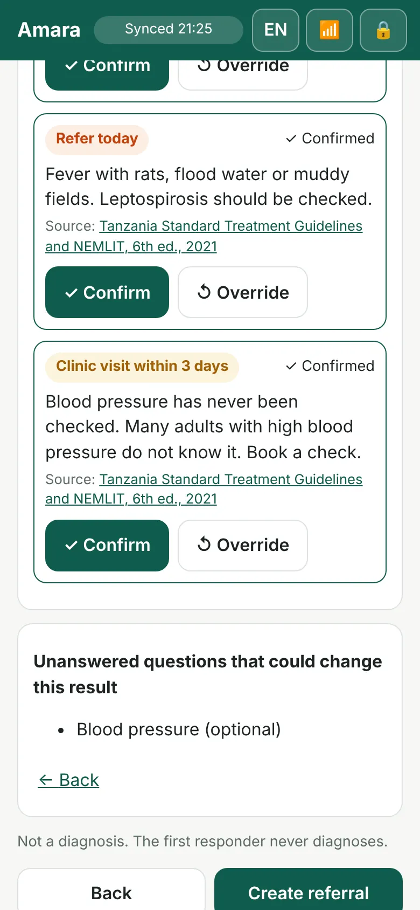</div><figcaption><span class="k">Step 5</span><h3>Rules decide, a person confirms</h3><p>Each flag shows its guideline source. The first responder confirms or overrides every one before a referral.</p></figcaption></figure>
      <figure class="step"><div class="phone">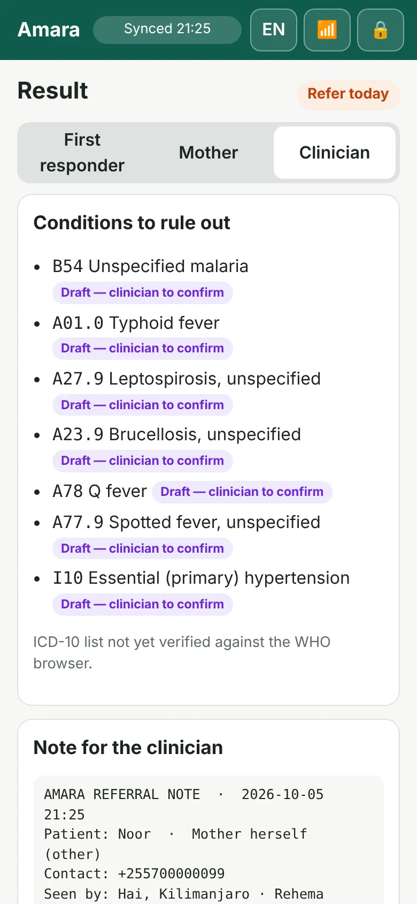</div><figcaption><span class="k">Step 6</span><h3>Clinician view</h3><p>Conditions to rule out with draft ICD-10 codes, each marked "clinician to confirm". Only the clinician sees this.</p></figcaption></figure>
      <figure class="step"><div class="phone">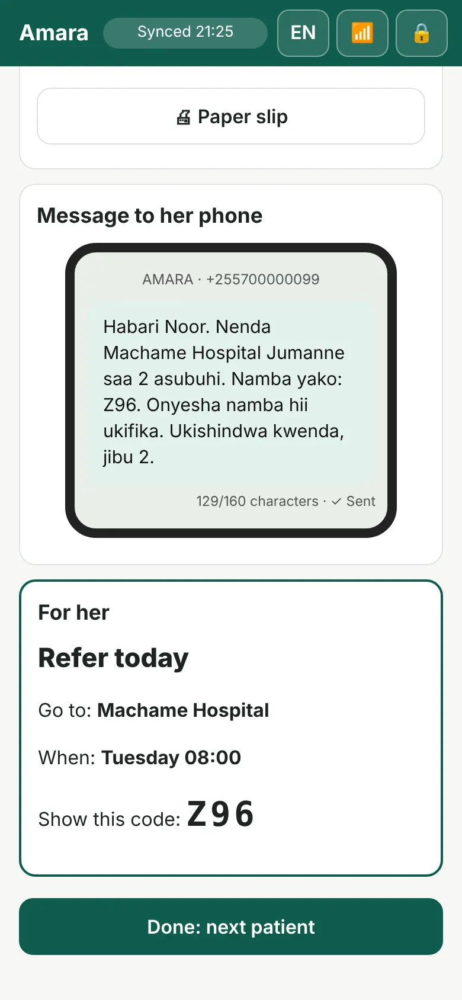</div><figcaption><span class="k">Step 7</span><h3>Referral and SMS</h3><p>Nearest suitable clinic, a time by urgency, and a code made on the phone. The SMS waits in a queue until there is signal.</p></figcaption></figure>
      <figure class="step"><div class="phone">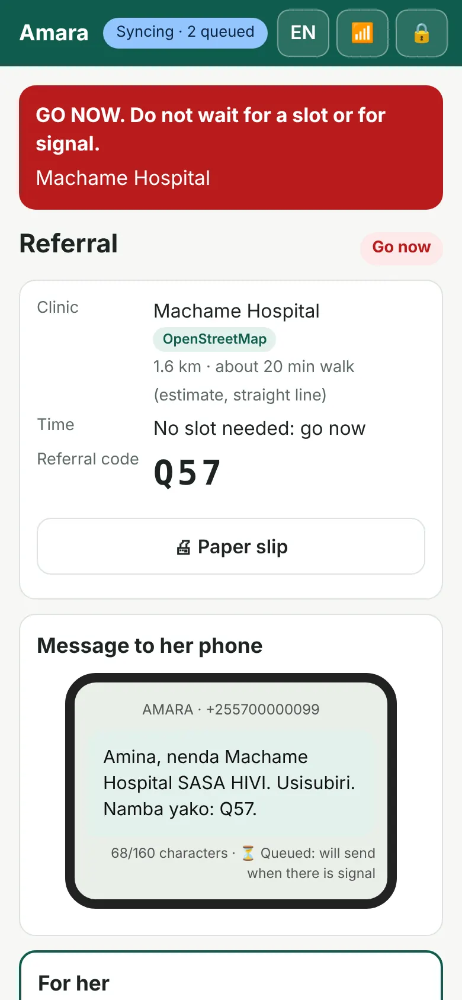</div><figcaption><span class="k">Danger signs</span><h3>Go now</h3><p>Headache, blurred vision and swelling after 20 weeks: Go now at once, with a paper slip. No slot, no signal needed.</p></figcaption></figure>
      <figure class="step"><div class="phone">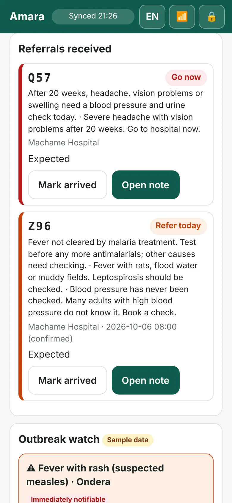</div><figcaption><span class="k">Step 8</span><h3>The clinic is ready</h3><p>When the signal returns, the queue syncs. The clinic sees her referral and note before she arrives.</p></figcaption></figure>
    </div>
    <p class="hint">Scroll sideways for every step →</p>

    <div style="margin-top:56px" class="head">
      <h2 style="font-size:clamp(26px,3.4vw,36px)">Three answers, never a diagnosis</h2>
    </div>
    <div class="tiers">
      <div class="tier"><span class="pill go">Go now</span><p>Hospital immediately, with a paper referral. Never waits for a slot or a network.</p></div>
      <div class="tier"><span class="pill today">Refer today · within 3 days</span><p>A booked slot with the day and time. Her note arrives first.</p></div>
      <div class="tier"><span class="pill ok">Not sure · ask the clinic</span><p>When the AI is unsure or no rule matches, the app says so and offers to ask the clinic.</p></div>
    </div>
    <div class="who">
      <div><span class="eyebrow">The mother sees</span><h3>Where, when, and her code</h3><p>No symptoms and no diagnosis in her SMS or voice call.</p></div>
      <div><span class="eyebrow">The first responder sees</span><h3>Urgency and the reason</h3><p>Every reason carries its guideline source.</p></div>
      <div><span class="eyebrow">The clinician sees</span><h3>Conditions to rule out</h3><p>Draft codes such as <code class="icd">A27.9</code> leptospirosis or <code class="icd">A23.9</code> brucellosis, to confirm or change.</p></div>
    </div>
  </div>
</section>

<section class="band night" id="ai">
  <div class="wrap">
    <div class="head">
      <p class="chap"><b>06</b><span class="eyebrow">The small AI</span></p>
      <h2>It listens to her own words, and says when it is unsure</h2>
      <p class="lede soft">A model under 1 MB runs on the phone with no internet. It maps each phrase to a fixed list of 21 symptoms and exposures, with how sure it is. It never decides urgency; written rules do that.</p>
    </div>
    <div class="ai">
      <div class="reads" aria-label="What the small AI heard, from the demo">
        <div class="read"><q lang="sw">Nimemeza mseto lakini homa bado ipo</q><span class="en">I took malaria tablets but the fever is still there</span><div class="row"><span>Fever not cleared by malaria treatment</span><span>94%</span></div><div class="meter"><i style="width:94%"></i></div></div>
        <div class="read"><q lang="sw">Kuna panya wengi nyumbani</q><span class="en">There are many rats at home</span><div class="row"><span>Rats, flood or stream water</span><span>92%</span></div><div class="meter"><i style="width:92%"></i></div></div>
        <div class="read unsure"><q lang="sw">Nimechoka</q><span class="en">I'm tired</span><div class="row"><span>Not sure: ask her again</span><span>13%</span></div><div class="meter"><i style="width:13%"></i></div></div>
        <p class="soft" style="font-size:13px">The white tick marks the 40% line. Below it, the app shows Not sure instead of guessing.</p>
      </div>
      <dl class="specs" style="margin:0">
        <div><dt>660 KB</dt><dd style="margin:0"><span>Character n-gram TF-IDF and logistic regression, trained in Python and run in TypeScript on the phone</span></dd></div>
        <div><dt>21</dt><dd style="margin:0"><span>Symptoms and exposures it can name, plus "other"</span></dd></div>
        <div><dt>0.40</dt><dd style="margin:0"><span>Confidence threshold. Below it: Not sure</span></dd></div>
        <div><dt>58%</dt><dd style="margin:0"><span>Accuracy on held-out synthetic phrases; 75% when the model is confident. Real phrases from mothers are needed before a pilot</span></dd></div>
        <div><dt>Next</dt><dd style="margin:0"><span>Swahili voice-to-text on the phone, so the note writes itself as she speaks</span></dd></div>
      </dl>
    </div>
  </div>
</section>

<section class="band alt">
  <div class="wrap">
    <div class="head">
      <p class="chap"><b>07</b><span class="eyebrow">Tailored care</span></p>
      <h2>Care shaped by what she is exposed to</h2>
      <p class="lede">A farmer with a fever who helped with calving needs a different test from one who walked through flood water. The app asks, and the clinic is told.</p>
    </div>
    <div class="exp">
      <div><b>Animals</b><p>Cows or goats at home, animal births, sick animals<span>Fever with animals: check zoonoses such as brucellosis and Q fever</span></p></div>
      <div><b>Rats, flood water</b><p>Rats at home, flood or stream water, muddy fields<span>Fever with this: check leptospirosis</span></p></div>
      <div><b>Mosquitoes, water</b><p>Net last night; drinking water source<span>Malaria and diarrhoea risk go in the note</span></p></div>
      <div><b>Pregnancy</b><p>Could she be pregnant; family planning<span>So the clinic knows which medicines are safe</span></p></div>
      <div><b>Farm work</b><p>Heavy, moderate, or mostly sitting<span>Context for the clinician</span></p></div>
      <div><b>Season, outbreaks</b><p>Weekly counts by ward<span>Rising clusters flagged across clinics</span></p></div>
    </div>
  </div>
</section>

<section class="band night" id="safety">
  <div class="wrap">
    <div class="head">
      <p class="chap"><b>08</b><span class="eyebrow">Responsible AI</span></p>
      <h2>Safety is built in, and tested</h2>
      <p class="lede soft">The brief's Responsible AI test is pass or fail. These six rules are written into the code and checked by 128 automated tests on every change.</p>
    </div>
    <div class="rules">
      <div class="rule"><h3>No AI advice</h3><p>Every flag and next step comes from a written rule and shows its source.</p></div>
      <div class="rule"><h3>No diagnosis to her</h3><p>Only the clinician sees draft ICD-10 codes, each to be confirmed.</p></div>
      <div class="rule"><h3>Not sure is allowed</h3><p>Low confidence or no matching rule means: ask her again, or ask the clinic.</p></div>
      <div class="rule"><h3>A person decides</h3><p>Every flag is confirmed. Every escalation is approved with a work ID.</p></div>
      <div class="rule"><h3>Urgent never waits</h3><p>Go now shows at once with a paper referral, whatever the network.</p></div>
      <div class="rule"><h3>Her data stays hers</h3><p>On the phone until sync, behind a PIN. No health details in any SMS; NIDA masked; the district sees only counts.</p></div>
    </div>
  </div>
</section>

<section class="band">
  <div class="wrap split">
    <div>
      <div class="head" style="margin-bottom:28px">
        <p class="chap"><b>09</b><span class="eyebrow">From one drug shop to the district</span></p>
        <h2>Outbreaks seen early, escalated by a person</h2>
      </div>
      <ol class="flow">
        <li><span>Each referral adds an anonymous count: ward, syndrome, week. No names, no phone numbers.</span></li>
        <li><span>A cluster is flagged when cases pass the 4-week average plus two standard deviations.</span></li>
        <li><span>Clinics within 25 km get a guidance card from WHO surveillance guidelines.</span></li>
        <li><span>The escalation to the district surveillance officer stays a draft until a person approves it with their work ID.</span></li>
      </ol>
      <p class="src">In the demo: fever with rash in one ward, week 40, 7 cases against a threshold of 2.4. <span class="sample">Sample data</span></p>
    </div>
    <div class="pair">
      <div class="phone">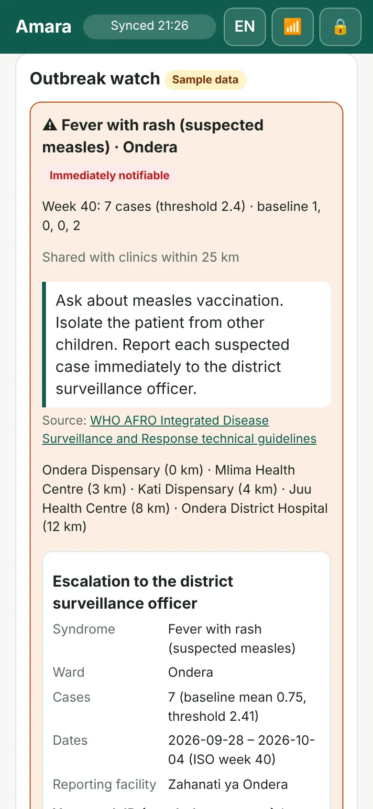</div>
      <div class="phone">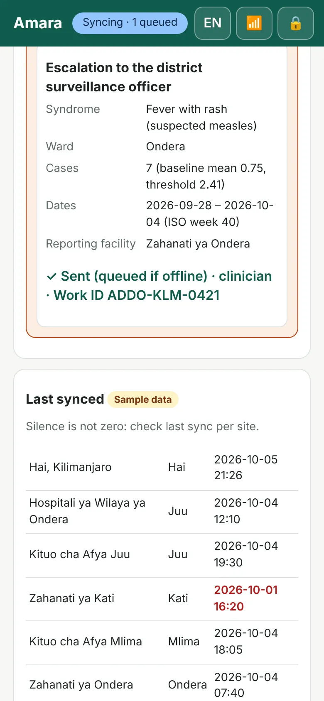</div>
    </div>
  </div>
</section>

<section class="band alt">
  <div class="wrap">
    <div class="head">
      <p class="chap"><b>10</b><span class="eyebrow">Real field problems</span></p>
      <h2>Built for the day things go wrong</h2>
    </div>
    <div class="probs">
      <div class="prob"><h3>There is no signal</h3><p>Everything runs offline. Referrals, notes and SMS wait on the phone and send when the network returns. A paper slip works in the meantime.</p></div>
      <div class="prob"><h3>She has no phone</h3><p>Her NIDA national ID stands in. Its first eight digits are her birth date, so the app checks the age she gives. No SMS is queued without a number.</p></div>
      <div class="prob"><h3>AI doesn't speak her language</h3><p>For Kichaga, Maa and others, keypad answers and voices recorded by the community. The interface works in Swahili and English, with a French draft.</p></div>
      <div class="prob"><h3>The clinic is full</h3><p>A booked slot and a note that arrives first. Danger signs skip the queue with Go now.</p></div>
    </div>
  </div>
</section>

<section class="band">
  <div class="wrap">
    <div class="head">
      <p class="chap"><b>11</b><span class="eyebrow">Evidence we build on</span></p>
      <h2>Built on programmes that worked</h2>
    </div>
    <div class="prior">
      <div><h3>Afya-Tek</h3><span class="where">Kibaha, Tanzania · 2020–23</span><p>Linked 110 drug shops, 240 health workers and 53 facilities; 89% of referrals completed.</p><p class="take">Digital referral from drug shops works</p></div>
      <div><h3>m-mama</h3><span class="where">Tanzania · national</span><p>Call centre and community taxis for emergencies. Shinyanga maternal deaths fell from 60 (2015) to 15 (2021).</p><p class="take">Transport is the life-saving step</p></div>
      <div><h3>Wazazi Nipendeni</h3><span class="where">Tanzania · 2012</span><p>Free Swahili SMS for mothers: 1.3 million registered and 86 million messages by 2016.</p><p class="take">Mothers read Swahili SMS</p></div>
      <div><h3>MomConnect</h3><span class="where">South Africa · 2014</span><p>Registered at the first visit; SMS was about three-quarters of running costs.</p><p class="take">Keep SMS short and few</p></div>
    </div>
    <p class="src">Sources: BMC Health Services Research 2024 (Afya-Tek); Munishi et al., PLOS Global Public Health 2023 (m-mama); The Compass for SBC (Wazazi Nipendeni); Barron et al., BMJ Global Health 2018 (MomConnect).</p>
  </div>
</section>

<section class="band alt">
  <div class="wrap">
    <div class="head">
      <p class="chap"><b>12</b><span class="eyebrow">Pilot · Hai, Kilimanjaro</span></p>
      <h2>Where we start, and what is not done yet</h2>
      <p class="lede">Co-founder Juanita Ndyamukama is from Tanzania. Hai, on the slopes of Kilimanjaro, looks like Noor's world: coffee and maize farms, drug shops linked to dispensaries and hospitals, and national systems (DHIS2 and eIDSR) that already use ICD-10.</p>
    </div>
    <div class="pilot">
      <div>
        <h3>The plan</h3>
        <ul>
          <li><b>Prepare:</b> co-design with dispensers, nurses and mothers; ethics approval; clinical and Swahili review; local-language audio.</li>
          <li><b>Run:</b> drug shops and their linked facilities, with an implementation facilitator on site, an incentive per completed referral, and transport support linked to m-mama.</li>
          <li><b>Measure:</b> referral completion (Afya-Tek benchmark 89%), time from first contact to clinic, minutes per mother (we expect about 7), same-day care for danger signs, AI accuracy on real phrases.</li>
        </ul>
      </div>
      <div>
        <h3>Not done yet</h3>
        <ul>
          <li>AI training phrases are written by the team, not yet real speech.</li>
          <li>Swahili and French wording await native-speaker review.</li>
          <li>Rules and ICD-10 codes await clinician review.</li>
          <li>Outbreak counts and clinic time slots in the demo are sample data.</li>
          <li>Next to build: Swahili voice-to-text, a live SMS gateway, a link to DHIS2.</li>
        </ul>
      </div>
    </div>
  </div>
</section>

<section class="band night" id="watch">
  <div class="wrap">
    <div class="head">
      <p class="chap"><b>13</b><span class="eyebrow">Videos</span></p>
      <h2>See it, and meet us</h2>
    </div>
    <figure class="feature"><video controls preload="none" playsinline poster="media/simulation-poster.webp" src="media/simulation.mp4" aria-label="Simulation: three mothers at one drug shop"></video><figcaption><h3>Simulation · three mothers, one drug shop · 1:48</h3><p>Noor has a fever and is referred for today. Amina is 28 weeks pregnant with danger signs and is told to go now. Zawadi brings baby Baraka for his vaccines at Kisereni Dispensary. It is set in Machame, Hai District. The phone screens are from the working app; the three mothers are fictional, and immunization routing and transport links are pilot designs.</p></figcaption></figure>
    <div class="vids">
      <figure><video controls preload="none" playsinline poster="media/demo-poster.webp" src="media/demo.mp4" aria-label="One-minute product demo"></video><figcaption><h3>Product demo · 1 minute</h3><p>Noor's journey in flight mode, from her words to the clinic dashboard.</p></figcaption></figure>
      <figure><video controls preload="none" playsinline poster="media/team-poster.webp" src="media/team.mp4" aria-label="Meet the team"></video><figcaption><h3>Meet the team · 1 minute</h3><p>Erica Stephens and Juanita Ndyamukama introduce Amara Health.</p></figcaption></figure>
    </div>
  </div>
</section>

<section class="band" id="team">
  <div class="wrap">
    <div class="head">
      <p class="chap"><b>14</b><span class="eyebrow">Amara Health</span></p>
      <h2>Maternal and child health for hard-to-reach places</h2>
    </div>
    <div class="team">
      <div class="person"><span class="av" aria-hidden="true">ES</span><div><h3>Erica Stephens</h3><p class="soft">Co-founder, Amara Health · Johns Hopkins Bloomberg School of Public Health</p></div></div>
      <div class="person"><span class="av" aria-hidden="true">JN</span><div><h3>Juanita Ndyamukama</h3><p class="soft">Co-founder, Amara Health · Johns Hopkins Bloomberg School of Public Health · from Tanzania</p></div></div>
    </div>
    <div class="cta">
      <div><h3>Open it on your phone</h3><p class="soft">Choose "Use the Tanzania demo setup", then PIN 1234.</p></div>
      <div class="btns">
        <a class="btn solid" href="https://ericastephens.github.io/amara-first-contact/?welcome" target="_blank" rel="noopener">Try the live demo</a>
        <a class="btn ghost" href="https://github.com/ericastephens/amara-first-contact" target="_blank" rel="noopener">Code on GitHub</a>
      </div>
    </div>
  </div>
</section>

</main>

<footer>
  <div class="wrap">
    <p>Built for Challenge 04 (Health) of the Small AI for Development Hackathon, World Bank × Hack-Nation, 3–4 October 2026. Noor is from the brief and is fictional; the places named (Machame, Hai District, Machame Hospital, Kisereni Dispensary) are real. All patient data in the demo is synthetic; screens marked Sample data use made-up counts and slots. Clinic locations © OpenStreetMap contributors.</p>
    <p>Not a medical device. The app does not diagnose; a clinician makes every clinical decision.</p>
    <p>© 2026 Amara Health · Erica Stephens and Juanita Ndyamukama</p>
  </div>
</footer>
